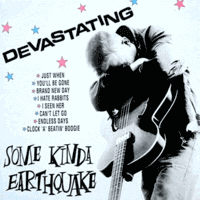

Some Kinda Earthquake - Devastating (MiniAlbum, 1989)
01 - Just When (2:26)
02 - You'll Be Gone (1:55)
03 - Brand New Day (2:24)
04 - I Hate Rabbits (2:40)
05 - I Seen Her (4:24)
06 - Can't Let Go (4:00)
07 - Endless Days (2:48)
08 - Clock A Beatin' Boogie (3:22)
© Link Records :: [LINK MLP074]
Notes
United Kingdom.
Simon Kelly - Vocals
Dave James - Guitars
Simon Ward - Bass
Darrel Johnson - Drums
Badger - Saxophone
Darren Webb - Trumpet
Tracks 1, 2, 3, 4 - recorded December '87, engineered and produced by Roger Lomas
Tracks 5, 6, 7, 8 - recorded July '88 at Far Heath Studios, engineered by Angus and mixed by Roger Lomas
Songs are written-by James / Ward: "Just When", "I Hate Rabbits"
Songs are written-by James / Kelly: "Brand New Day", "Can't Let Go", "Endless Days"
Song is written-by Johnson / James / Kelly: "I Seen Her"
Song is written-by Baderick / Johnson / Webb / James / Kelly / Ward: "Clock A Beatin' Boogie"
Song is written-by James: "You'll Be Gone"
reference information: Discogs®
Review
309/366 (Project 366)
Just a quote from the back cover - "Mean And Moody Rockin' Machine". The sound itself is a lovely blend of revival, authentic, eighties, fifties Rock'n'Roll with a Rockabilly coating and an enthusiastic approach. The tracks are self-penned songs, truly rebel tunes. Sometimes exclusive and just unbridled fun, as it is with "Can't Let Go", which remind a bit 80's New Wave poppy Post-Punk, the alternative and dance one (mostly because of its baggy tune, brass instruments and punky clowning). Melodious and harmonious tracks are also there, such as "Brand New Day", "Endless Days" and "Clock A Beatin' Boogie". Sound effects are actively used, and in particular echoes. But not too overwhelming as it could be with a (neo) sound. Most of the tracks are real Rockabilly Rock - "I Seen Her", "Just When", "You'll Be Gone", "I Hate Rabbits" sound straightforward and may remind both classic and something more contemporary at the time of release. However, all the tunes are rather original and nicely crafted. Quite beautiful guitar solos and vocals make the songs stand out. With its a bit raw look, a little wild energy and so on - the record is so fine.
The stormy beginning of the first song "Just When" sets up a certain atmosphere, then the rhythm section makes it much more groovy and the vocals just evoke exhilarant emotions. Such a recreative mood continues with the second track "You'll Be Gone", but with a slightly rougher tune and finished with a big expressive note. The third song "Brand New Day" greets us with a marching stomp, but with a rather cheerful and bouncing tune. And the first four ends with a pretty hit song "I Hate Rabbits", which combines something from Eddie Cochran, a bit reminiscent of the English fifties rockin' classic "Move It", as well as the style of Don Woody and his "You're Barking Up The Wrong Tree" as an example. And all this in one strollin' whirlwind, stylistically suitable for Some Kinda Earthquake. The second four opens with a rather Revival sound of the track "I Seen Her". Rockers and teds should be happy with this tune. A simple base but embellished with many classy subtleties. The seventh ("Endless Days") and eighth ("Clock A Beatin' Boogie") tracks are rather melodic, even somewhat tender. Dancing mood, evening sensations, sweet singing, rockin' and rollin' nostalgic tunes. No silly stuff, just a beautiful song is matter there.
Actually a pretty good mini-album from the band and their sound, which was part of a certain scene in those years in the UK.